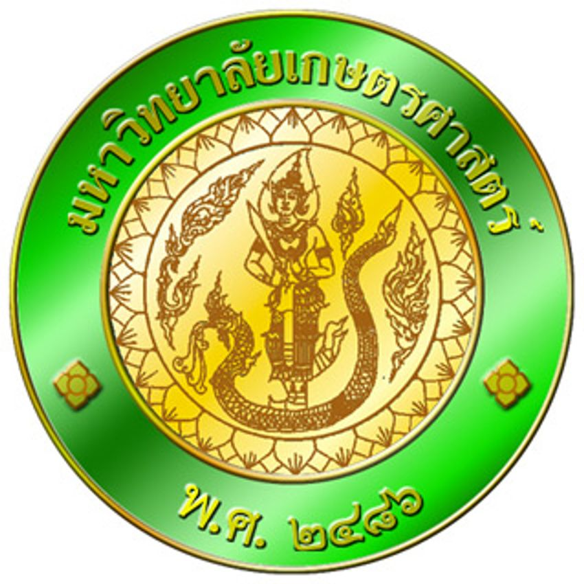

ผมมีความสนใจในด้านวิทยาศาสตร์การกีฬา เนื่องจากเป็นศาสตร์ที่เกี่ยวข้องกับการออกกำลังกาย การพัฒนาสมรรถภาพทางร่างกาย และการดูแลสุขภาพ
นอกจากนี้ ผมยังมีความชื่นชอบกีฬาบาสเกตบอล และมีประสบการณ์จากการเข้าร่วมการแข่งขันหลายรายการ ทำให้ได้เรียนรู้ทั้งการฝึกซ้อม ความมีวินัย การทำงานเป็นทีม และการพัฒนาตนเอง
ผมจึงมีความตั้งใจที่จะศึกษาต่อใน คณะวิทยาศาสตร์การกีฬา เพื่อพัฒนาความรู้เกี่ยวกับกีฬา การออกกำลังกาย และสมรรถภาพทางร่างกาย รวมถึงนำความรู้ไปต่อยอดในอนาคต
ตั้งใจศึกษาและพัฒนาความรู้ด้านวิทยาศาสตร์การกีฬา ฝึกฝนทักษะด้านกีฬาและการทำงานร่วมกับผู้อื่น เพื่อนำความรู้ไปประกอบอาชีพที่เกี่ยวข้องกับวงการกีฬา และสร้างประโยชน์ให้กับผู้อื่นในอนาคต